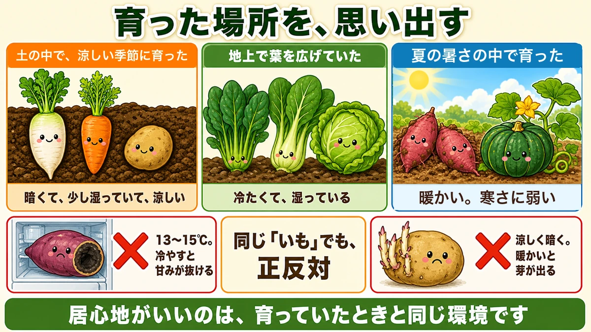
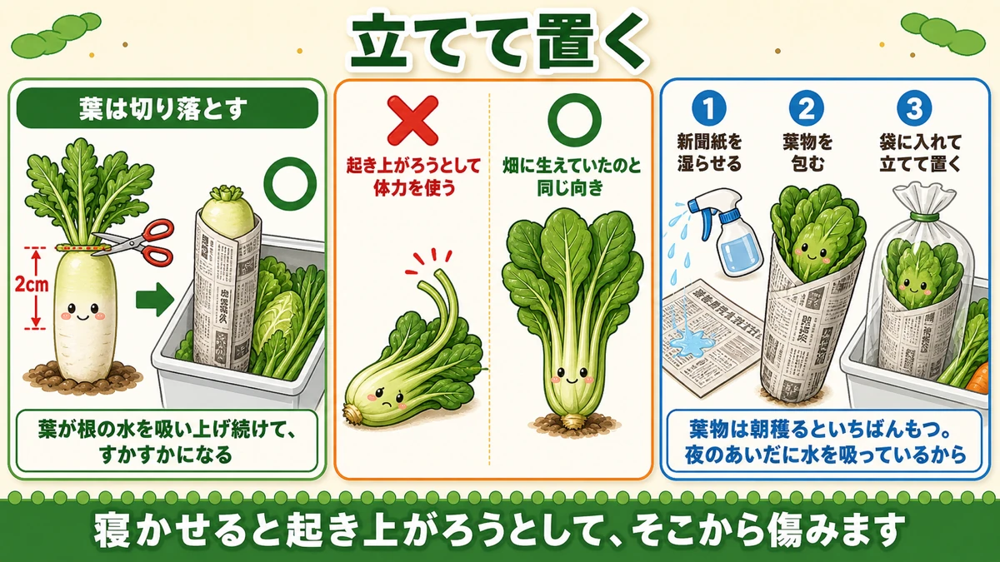
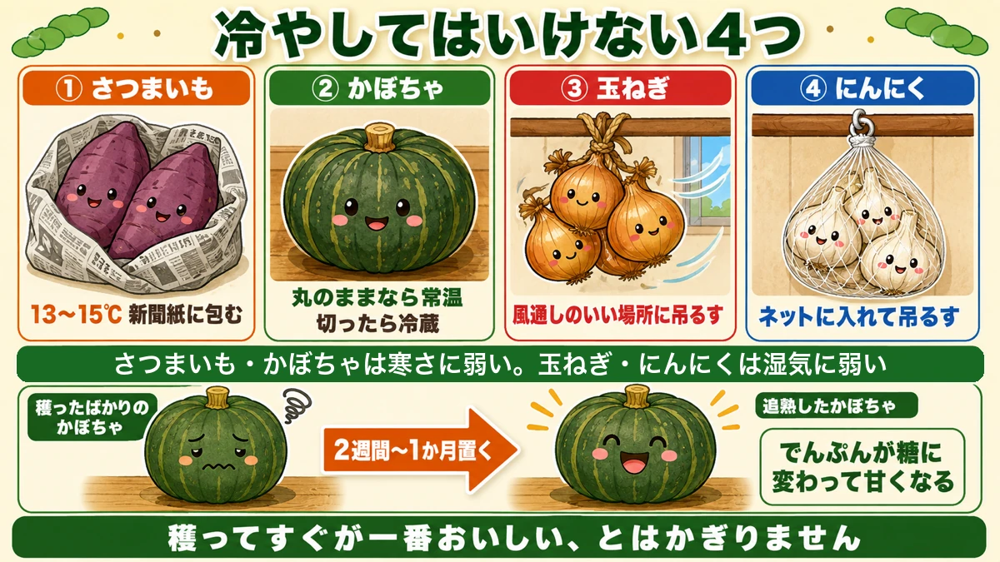

Store it the way it grew 🥕 Sweet potatoes must never go in the fridge

🥕 "I had a big pick and it went off while it sat there."
🥕 "I put my sweet potatoes in the fridge and the flavour vanished."
🥕 "My spinach was limp by the next day."
Hello, I'm Eiko. Eight years of growing vegetables organically and without pesticides, and a teaching licence in science.
Today: what happens after you pick. The saddest waste in a home garden is spoiling something you grew. Three months of work undone by one wrong shelf.
The headline:
How to store a vegetable is decided by where it grew.
Remember where it lived

What this diagram says （図解の文字）
- Remember where it grew
- "Grew underground, in a cool season" → "dark, slightly damp, cool"
- "Spread its leaves above ground" → "cold and damp"
- "Grew in summer heat" → "warm. Not cold-tolerant"
- ✗ "13–15 °C. Chilling takes the sweetness out" ／ "same word 'potato', opposite treatment"
A vegetable is most comfortable in the conditions it grew in. Three groups:
- Grew underground in a cool season (radish, carrot, potato) — dark, slightly damp, cool
- Spread leaves above ground (spinach, komatsuna, cabbage) — cold and damp
- Grew in summer heat (sweet potato, squash) — warm, and intolerant of cold
Sort into those three and the storage place is essentially decided.
So sweet potatoes can't be chilled
Despite the name, a sweet potato is a crop of the tropics. Put it in the fridge and it suffers chilling injury: the flesh darkens and the sweetness goes.
The right place is wrapped in newspaper at about 13–15 °C (55–59 °F) — a hallway, or the corner of an unheated room.
Potatoes are the opposite
Potatoes grow in cool conditions. Kept warm, they sprout.
So: dark, cool and airy, in a cardboard box or paper sack, out of the light.
Same word, opposite treatment. Swap them and you spoil both.
Root crops: keep them close to how they were in the ground

What this diagram says （図解の文字）
- Store them standing up
- "Cut the leaves off" — 2 cm ○ ／ "the leaves keep drawing water out of the root and it goes hollow"
- ✗ "lying down, it spends energy trying to right itself" ／ ○ "the same way up as it grew"
- 1 "dampen newspaper" 2 "wrap the greens" 3 "bag them and stand them up"
- "Leafy crops keep best picked in the morning"
Cut the leaves off
Cut the tops off a radish or carrot as soon as you lift it.
Leaves draw water up from the root, and they go on doing it after harvest — so the root's moisture is taken by the leaves and it goes hollow.
Cut leaving about 2 cm (¾ in) of leaf base. Cut there and the wound is less likely to rot.
Store them upright
Keep root crops the same way up as they grew. Lying down, a vegetable spends energy trying to right itself; upright, it doesn't have to.
Wrap in newspaper and stand them up in the fridge. That alone changes how long they last.
A big harvest? Put it back in the ground
When you have too many, reburying them in the plot is the best storage there is.
Dig a hole, lay the topped radishes in at an angle and cover with soil. Put a stick in as a marker.
Soil is stable in temperature and doesn't dry things out. It keeps them far longer than a fridge — into late winter.
Leafy crops: don't let them dry
They lose water fast
Spinach and komatsuna wilt quickly because the leaf area is large. A lot of surface means a lot of water leaving — not the slow loss of a root crop.
So: damp, and upright
- Wrap in damp newspaper or kitchen paper
- Bag them and stand them up in the fridge
Upright for the same reason as root crops — laid down they try to right themselves, the stems bend and they spoil.
The hour you pick matters here too
A privilege of growing your own: leafy crops keep best picked in the morning, because they took up plenty of water overnight. Pick at midday and you're picking something already partly dehydrated.
The four that must not be chilled

What this diagram says （図解の文字）
- ① Sweet potato — "13–15 °C, wrapped in newspaper"
- ② Squash — "room temperature while whole; refrigerate once cut"
- ③ Onion — "hang somewhere airy"
- ④ Garlic — "hang in a net"
- "Sweet potato and squash can't take cold; onion and garlic can't take damp"
Two different reasons: sweet potato and squash are cold-sensitive; onion and garlic are damp-sensitive.
One exception worth knowing
A squash isn't at its best the day you cut it. Leave it two weeks to a month and starch converts to sugar and it sweetens — curing.
If you've eaten one the day you picked it and thought "that's not sweet", try leaving it. It becomes a different vegetable.
Science bit: a picked vegetable is still alive 🔬
A harvested vegetable doesn't grow any more. But it goes on respiring.
Respiration means using stored sugar to release energy — the same thing we do. Which means while it sits there, a vegetable is consuming its own sweetness.
Temperature governs the rate. The warmer it is, the faster it respires — as a rough rule, 10 °C warmer roughly doubles it.
Chilling makes things keep because it slows respiration and so slows the rate at which the sugar is spent.
Then why is too cold bad? Because in some vegetables the membranes inside the cells break down at low temperature — and the warmer a vegetable's origins, the higher that threshold sits. That's what "sweet potatoes stop at 13 °C" means.
To sum up
- ✅ Store it in conditions like the ones it grew in. That's the whole rule
- ✅ Cut the tops off root crops — the leaves keep drawing water out of the root
- ✅ Store everything standing up. Lying down, they spend energy righting themselves
- ✅ Leafy crops: damp paper, bagged, upright
- ✅ Leafy crops keep best picked in the morning
- ✅ Sweet potato: 13–15 °C. Never the fridge
- ✅ Potato: cool and dark — the opposite
- ✅ Onion and garlic: hang them up. Damp is the enemy
- ✅ Squash sweetens if you cure it
- ✅ A big root harvest keeps longest buried back in the ground
You don't have to do all of it. Next time you lift a radish, cut the top off there and then. The difference in keeping is obvious 🥕
Thank you for reading!